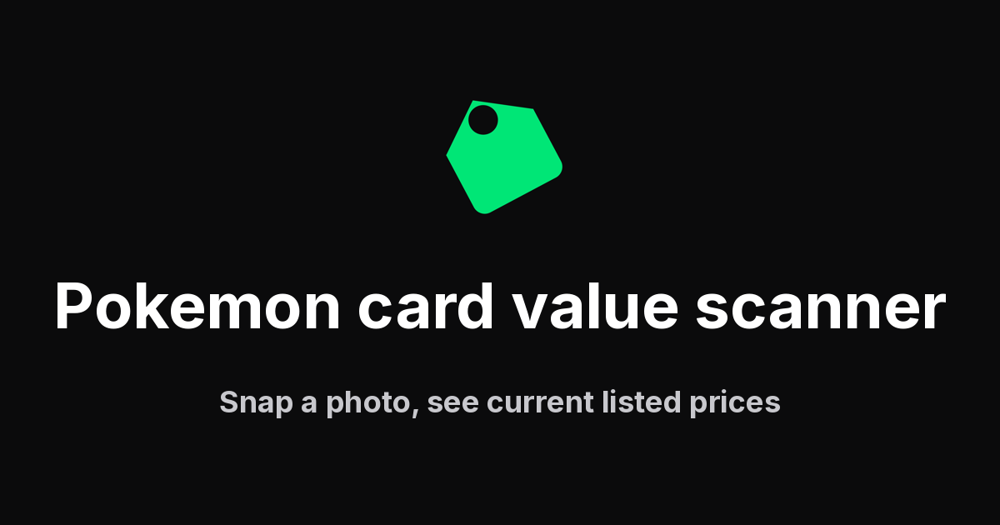

A pokemon card value scanner is built for a different job than a name search. People often type a character into a price box and treat every print with that name as the same card. A scanner that only knows the name will average those prints together and give you a number that is wrong for every single one. There are dozens of Charizard cards, and hundreds of Pikachu cards. The useful tool reads the card in front of you, works out the exact set, number, and print, and then looks at what that card is listed for right now.
If you want a useful pokemon card value scanner, read the print from a photo. That is what  How Much Is It Worth: Scanner is built to do.
How Much Is It Worth: Scanner is built to do.
A photo scanner is useful because the details that move the market are small, and they are on the card. On older cards, the set symbol sits just under the bottom right of the artwork. On modern cards it is bottom left, next to the regulation mark. Base Set cards from 1999 have no set symbol at all, which is itself a tell. The card number is at the bottom, in a form such as 4/102. If the first number is bigger than the second, it is a secret rare. Rarity marks include a circle for common, a diamond for uncommon, and a star for rare. Holo, reverse holo, full art, alt art, and special illustration rares sit on top of that.
On Wizards of the Coast era cards, a first-edition mark is a small black Edition 1 circle on the left edge, just under the artwork. The same card without it is an unlimited print. Shadowless Base Set prints have no drop shadow on the right side of the art box, and they sit between a first-edition print and an unlimited print in the market. Japanese, English, and other languages are separate markets. Condition still matters: whitening on the back edges, scratches on the holo, and centering. A high grade and a played copy of the same print should not share one number.
This is a guide to using a scanner on the card in your hand. It is not a rewrite of a general Pokemon card value page, and it is not a "most valuable card" list. We will not invent a set-by-set chart, and we will not copy a dated snapshot figure as if it were current.
Photograph the front in soft light, then the back. If the card is in a graded slab, include the label. Take or upload up to three photos. The app shows the identification first: the set, the number, and the variant. If it has picked unlimited and you can see a first-edition stamp, you change it before any price lookup. Then you set the condition (Damaged or Played, Good or Light Played, Near Mint, or Graded) and read a Worth about figure from PokéWallet card market data, the listed range from current listings, a confidence level, and the listings themselves when there are enough of them. If the data is thin, the result is labelled as a rough estimate. The product will not invent a precise figure, and it is not a certified appraisal, an insurance valuation, or an offer to buy. Trading card prices use PokéWallet, with a source credit where that data appears.
Want to try it? Start your free 3-day trial in the iPhone app at https://apps.apple.com/app/id6832980231. 3 free scans + 3-day unlimited trial. You can also scan it online free at https://howmuchisitworth.today/pokemon-card-scanner. On Android? Check https://howmuchisitworth.today/ for the Android release.
A listed range is a spread of asking prices, not a sold-price guarantee. A low confidence result can be honest when listings run from played copies to optimistic near-mint asks. Do not use a raw unlimited result as a guide for a first-edition print, a shadowless print, or a graded copy. Do not clean a card to tidy a photo.
If you are thinking about grading, scan the card raw first, then look at what the same print sells for in a high-grade slab. If that graded market does not comfortably cover the fee, postage both ways, and the wait, selling it raw can make more sense. Before you send anything in, check centering, back-edge whitening, holo scratches or print lines, and corners.
Fakes are common on famous early cards and on modern chase cards. Warning signs include a glossy feel on a card that should be matte, the wrong font on the HP or attack text, colours that look washed out or too saturated, a back that is too purple or too light, missing texture on a modern textured full art, and an energy symbol that is slightly off. Real cards also have a thin black layer you can see on the edge. If a price looks too good, it probably is not genuine. A scan can help you find genuine listings to compare against, but it is not a laboratory authentication. For a high-value card, get it authenticated before you buy or sell.
If you decide to list a card, you can copy a ready-made listing, with Quick sale, Fair price, or Top dollar, and save the scan to a collection. Destinations can include eBay, Facebook Marketplace, or Gumtree.
A name-only checker skips the set symbol, the number, the edition stamp, and the language. A pokemon card value scanner starts with those marks. We will not invent a price for every print. Compare current public listings for the card you actually have.
The app is free to start. Start your free 3-day trial. 3 free scans + 3-day unlimited trial.
If you want to use a pokemon card value scanner, read the print from a photo. Download the app and scan your first card free, or start at https://howmuchisitworth.today/pokemon-card-scanner.
Pokémon and Pokémon character names are trademarks of Nintendo, Creatures Inc., Game Freak, and The Pokémon Company. This guide and the How Much Is It Worth app are not affiliated with, endorsed by, or sponsored by those parties, or by Wizards of the Coast, PSA, CGC, or BGS.
I also wrote a Google Docs walkthrough of the same photo method: How Much Is It Worth: Scanner.